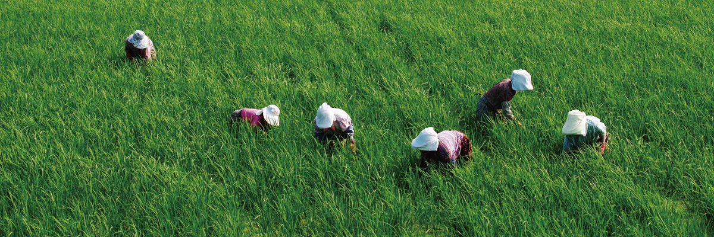
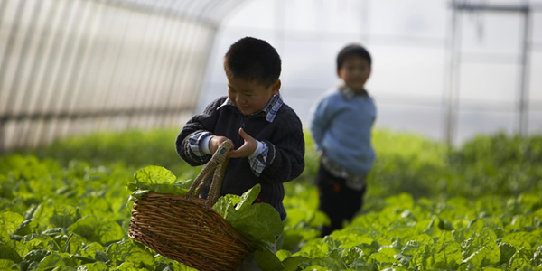
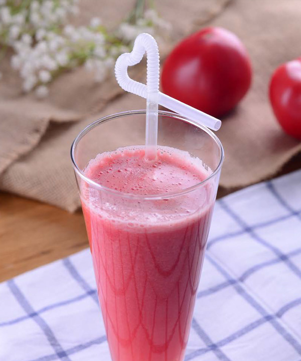

有机理念
Organic
concept
健康安全 食生活
吃有机食品对环境的好处
有机提倡引导作物自然生长和土地的可持续利用，这种理念决定了有机农业对环境的非常友好。
有机生产鼓励使用天然物料,适量施有机肥及灌溉,减少资源浪费,提高农场内及其周边的生物多样性。
有机农业有严格的土壤保护措施要求，能恢复和维持土壤的生命力, 令土壤可持续地为人们提供足够而优质的食物。在土壤退化、污染日趋严重的今天, 为了人类自身的繁衍和发展，为了下一代的幸福，每个地球公民都有责任保护土壤，保护地球。
因此，吃有机食品除了对钱袋子不好，对个人健康和对环境都是很有益处的。需要提醒的是，这种好处不是一天两天就能吃出来的，可能吃上一年半载或者三五年之后，你才能真正尝到有机食品的甜头。尝到甜头的那一刻，其实只是甜头的开始，持续的甜头，会在老人孩子、同学朋友以及周围的环境中，得以体现。

我们吃的东西怎么了？-不仅仅是变味了
很多人哀叹，吃饭再也吃不出以前那个味了。其实，变味仅仅是其中一个遗憾，化学药剂的过度使用，则可能会给老百姓留下更多更危险的遗憾。
菜为什么没那么好吃了？
现在吃饭吃不出以前那种滋味的原因，主要有以下几个：
-
1、部分菜农为提前果蔬上市时间，没熟就采摘，然后用化学制剂催熟。 长得快，产量高，但处理不当就会变味，甜瓜发苦就是这个原因。
-
2、有机肥减少。过去种地都上农家肥，种出来的菜好吃有味。而现在为求高产，农民们往往猛用化肥，上氮肥过多。化肥所用的氮、钾及磷未能补充土壤中的矿物质，过量化肥会阻碍矿物质吸收及产生有害的硝酸盐。土地的劲越来越小了微量元素流失，所以菜不好吃。
-
3、多选用抗病高产品种。如以前的西红柿皮薄、味浓，但易裂果，而现在为了好运输方便保存，就选用硬肉的种子，口感差了不少。少了口福，可能仅仅是遗憾，但如果人们连吃东西都不能安心了，那就更不知道要去哪里获得幸福感了。
生机饮食
Macrobiotic
Diet
生食有机 有机生活
1 .不吃污染及过度加工的食物
2. 提高生食有机蔬果的比例或喝有机蔬果汁及精力汤
3. 符合健康原则及环保概念的生活方式
生机蔬果汁套餐
[ 纤体排毒 冻龄回春 ] 套餐
[ 美颜补血 靓丽动人 ] 套餐
